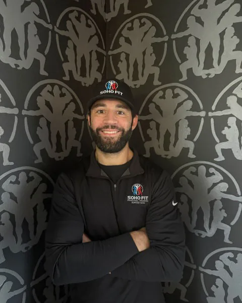

ColeRingquist
ACSM certified, NASM Corrective Exercise Specialist. Golfers, seniors and medical populations.
How long have you been in fitness and can you describe your journey?
My fitness journey began in childhood, watching my father prioritize health and longevity in our home gym. That early exposure taught me that fitness is a lifelong commitment, not a short-term phase. I started coaching professionally at age 20 at the YMCA and later spent eight years refining my craft at a premier golf and country club in Sarasota. Over the past 10 years, I’ve worked with a diverse range of clients, developing a passion for helping people move better, reduce pain, and build sustainable habits through personalized, effective, and enjoyable training.
What made you want to get into fitness coaching?
Before becoming a trainer, I faced a life-altering challenge when I was diagnosed with a rare form of cancer while completing my Health Sciences degree at USF. As I underwent treatment at Moffitt Cancer Center, fitness became my anchor. Even on the hardest days, I committed to exercise and spent my treatment hours studying for my ACSM certification. That experience showed me firsthand how fitness can build both physical strength and mental resilience. I became a coach to help others overcome challenges, improve their health, and discover what they’re truly capable of achieving.
What advice would you give for a new client exploring personal training to get started in their fitness journey or to enhance their current routine?
My advice to any new client is to come in with an open mind, be willing to try new things, and never hesitate to ask questions. Whether you’re just starting your fitness journey or looking to take your training to the next level, understanding the “why” behind your program is incredibly important. I believe fitness is most successful when it’s a partnership. My goal is not only to help you achieve results, but also to give you the knowledge and confidence to maintain a healthy, active lifestyle for years to come.
What is a success highlight in your fitness career that you’re particularly proud of?
While helping clients lose weight and build strength is always rewarding, the successes I’m most proud of involve helping people navigate significant medical and life challenges. Throughout my career, I’ve designed safe, progressive exercise programs for clients undergoing cancer treatment, recovering from injuries, and managing neurological conditions such as Parkinson’s disease, Multiple Sclerosis, and Traumatic Brain Injuries. Seeing clients regain confidence, improve their quality of life, and realize they are capable of more than they thought possible is what makes this work so meaningful to me.
What are some things you like to do in your spare time?
In my spare time, I enjoy spending time outdoors with my wife and our dog. We love staying active together, whether that means exercising, relaxing at the beach, or exploring new places. I’m also passionate about international travel and experiencing different cultures. I believe there’s so much to learn from seeing how people live around the world, and I enjoy bringing those experiences and perspectives into my everyday life.
What are some special skill sets and things that your clients should know about you?
One of my greatest strengths as a coach is my ability to work with a wide variety of clients, from young athletes to older adults looking to stay active, healthy, and independent. With a Bachelor of Science in Health Sciences from the University of South Florida, ACSM Certified Personal Trainer credentials, and a NASM Corrective Exercise Specialist certification, I combine movement mechanics, strength training, and functional fitness to create personalized programs that are both effective and enjoyable.
Throughout my career, I have worked with diverse populations, including youth athletes, golfers, seniors, and individuals facing significant medical and physical challenges. I have extensive experience designing safe, progressive exercise programs for clients undergoing cancer treatment or recovery, as well as those managing neurological conditions such as Parkinson’s disease, Multiple Sclerosis, and Traumatic Brain Injuries. As a Corrective Exercise Specialist, I also help clients improve movement quality, reduce pain, prevent injuries, and restore mobility.
My coaching philosophy goes beyond workouts. I take a whole-person approach, focusing on exercise, nutrition, sleep, stress management, and daily habits to help clients move better, feel better, and build sustainable results that last a lifetime.
Andrew Dunbuss →